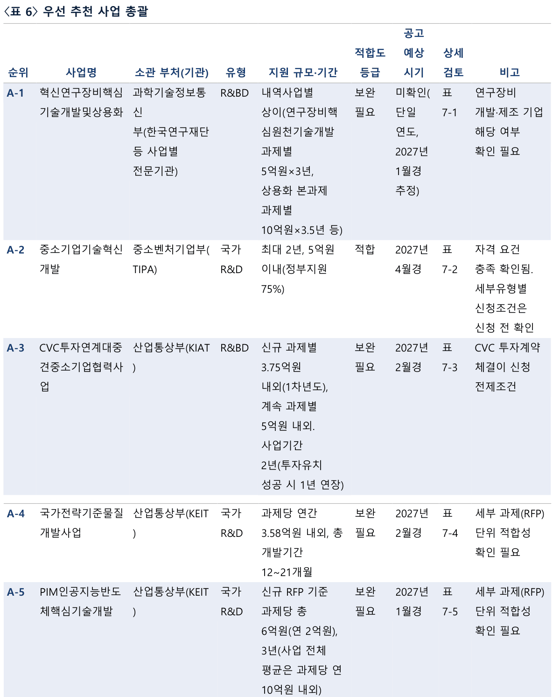
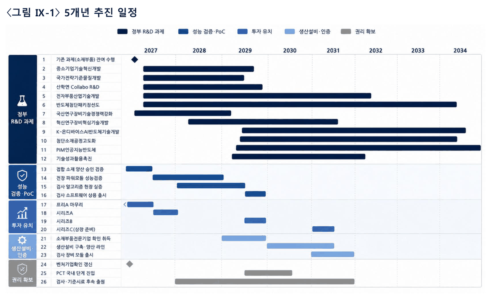
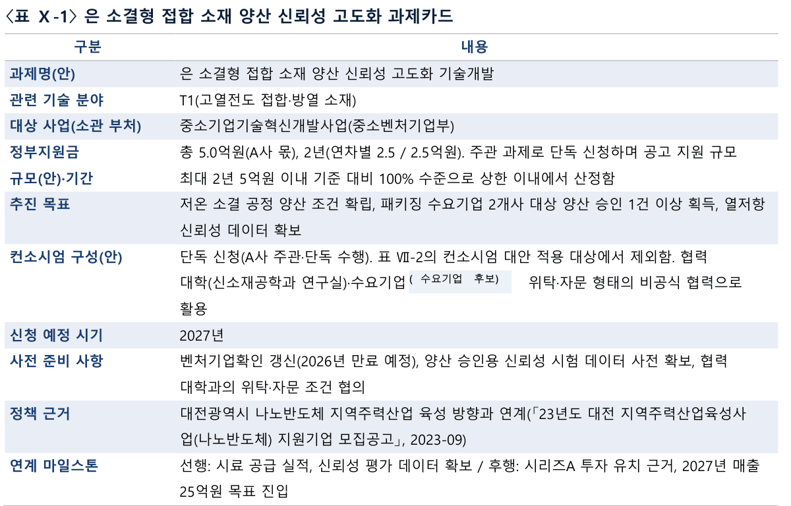

01
기업 정보와 공공기술을 함께 봅니다
어떤 기술인가에 더해, 어느 기업의 어떤 과제에 필요한지 검토합니다.
브릿지랩은 AC·VC의 보육·포트폴리오 기업을 포함한 기업 정보와 대학·출연연의 공개 기술을 축적하고 있습니다. 여기에 국가 R&D 수행 이력과 관련 특허 정보를 대조해 후보를 찾고, 확인한 기업의 사업 방향과 협력 현안을 분석에 반영합니다.
2026.10.08 기준. 분석에 활용하는 기업 정보의 규모이며 고객 수나 제휴기업 수가 아닙니다.
2026.10.08 기준. 대학·출연연이 공개한 기술 정보의 등재 건수이며 브릿지랩 소유 기술이나 중복을 제외한 원천기술 수가 아닙니다.
정보원 교차 매트릭스
| 정보원 | 스타트업의 기술 후보 | AC·VC의 기업별 지원 | 연구기관의 활용기업 |
|---|---|---|---|
| 기업 정보 | 보조로 참고 | 주로 대조 | 주로 대조 |
| 공공기술 정보 | 주로 대조 | 주로 대조 | 보조로 참고 |
| 국가 R&D 이력 | 주로 대조 | 주로 대조 | 주로 대조 |
| 관련 특허 정보 | 주로 대조 | 보조로 참고 | 주로 대조 |
| 지원사업·투자 정보 | 주로 대조 | 주로 대조 | 보조로 참고 |
주로 대조보조로 참고
분석 기반과 해석 기준
| 분석 기반 | 검토하는 내용 | 해석할 때 구분하는 점 |
|---|---|---|
| 기업 정보 | 제품·사업모델·성장단계·기술 방향 | 기업 정보가 있다는 것과 현재 도입 의향이 있다는 것은 별개로 확인합니다. |
| 공공기술 정보 | 적용 분야·보유기관·특허·기술소개자료 | 공개 등재 기술이 지금 이전 가능한지는 보유기관과 확인합니다. |
| 국가 R&D 이력 | 관련 기업·연구기관의 수행 경험과 협력 이력 | 과거 수행 이력은 현재 참여 여력과 따로 봅니다. |
| 관련 특허 정보 | 기업의 기술 접점과 연관 분야 | 특허 보유기업은 도입 후보일 수도, 자체 개발·경쟁 기업일 수도 있습니다. |
| 지원사업·투자 정보 | 후속 개발·실증·자금 준비의 경로 | 지원·투자의 확정으로 표현하지 않습니다. |
후보는 확인 단계로 구분합니다
- 탐색 후보
- 근거 검토
- 관심 확인
- 협의 진행
후보표에는 후보명과 함께 선정 근거, 활용 가설, 근거 출처·기준일, 확인이 필요한 사항, 다음 행동을 적습니다. 단계는 자동으로 넘어가지 않으며 확인한 날짜와 주체를 기록합니다. 확인되지 않은 후보를 수요가 없는 후보로 단정하지 않습니다.
BLIS — 기업·기술 정보를 사업화 판단으로 연결하는 분석 기반
축적·연계한 자료를 고객의 현안에 맞춰 검토하고, 후보 선정 근거와 남은 확인 사항을 함께 정리합니다. AC·VC 및 기업과의 접점을 통해 확보한 정보는 출처와 확인 시점을 구분해 보완합니다.
누구나 이용할 수 있는 BLIS 공개 서비스는 자료·인사이트에서 안내합니다.
02
후보를 찾고, 함께 추진할 과제로 구체화합니다
현안을 정의합니다
기업의 개발 목표, 기관의 사업화 대상 기술, 포트폴리오의 지원 과제를 확인합니다. 지금 결정할 일과 필요한 자료를 정리합니다.
후보와 근거를 검토합니다
기업·기술·R&D·특허·지원사업 정보를 대조합니다. 왜 이 후보가 적합한지, 어떤 조건을 더 확인해야 하는지 제시합니다.
협력 구조를 설계합니다
필요한 연구기관·기업·수요처의 역할과 협력 경로를 정리합니다. 합의한 과업 범위에 따라 적용 조건과 협의 쟁점을 확인합니다.
실행계획으로 옮깁니다
과제 목표·검증 방법·추진체계, 연차별 개발·자금 계획, 사업화 제안자료를 구체화합니다. 고객이 다음 협의와 신청 준비에 활용할 결과물로 전달합니다.
연구기관·기업과의 직접 협의를 브릿지랩이 맡는 경우에는 과업 범위에 명시하며, 협약·계약 체결은 고객이 진행합니다.
03
결과물에서 검토의 깊이를 확인하세요
공개 샘플은 가상 기업을 대상으로 작성한 정부지원사업 검토 문서입니다. 서비스의 구성과 검토 방식을 보여주는 자료이며, 아래 이미지는 샘플 문서의 일부 표를 잘라 보여줍니다.
후보표 한 행의 구성
- 후보명
- 선정 근거
- 활용 가설
- 근거 출처·기준일
- 확인이 필요한 사항
- 다음 행동
- 탐색 후보
- 근거 검토
- 관심 확인
- 협의 진행
-

(원본 이미지, 새 창)「정부지원사업 활용기회 검토보고서」 샘플 〈표 6〉 우선 추천 사업 총괄 중 상위 5행 발췌(원문 두 쪽에 걸친 표를 이어 보여줍니다) 가상 기업 샘플우선 추천 사업 총괄표
기업의 신청 요건과 기술 방향을 검토해 먼저 준비할 사업을 고르고, 사업별 상세 검토로 연결합니다.
이 표에서 보는 것- 적합도 등급
- 기업의 자격·기술 방향과 사업 요건이 맞는 정도
- 지원 규모·기간
- 공고 기준의 지원 범위와 수행 기간
- 공고 예상 시기
- 신청 준비를 시작할 시점
- 상세 검토
- 사업별 검토표로 이어지는 참조 번호
-

(원본 이미지, 새 창)「정부지원사업 5개년 활용계획」 샘플 〈그림 Ⅸ-1〉 5개년 추진 일정 가상 기업 샘플5개년 추진 일정
연차별 정부 과제 신청·수행 시점을 성능 검증, 설비·인증, 투자 준비 일정과 한 화면에서 맞춰 봅니다.
이 표에서 보는 것- 정부 R&D 과제
- 연차별로 신청·수행할 과제의 시작과 종료
- 성능 검증·PoC
- 과제 성과를 고객 검증으로 잇는 시점
- 투자 유치
- 과제 일정과 맞물리는 자금 준비 단계
- 생산설비·인증·권리 확보
- 사업화에 필요한 선행 조건
-

(원본 이미지, 새 창)「정부지원사업 5개년 활용계획」 샘플 〈표 Ⅹ-1〉 과제카드(공개용으로 일부 기업명은 가렸습니다) 가상 기업 샘플과제카드
무엇을 개발하고 어떻게 검증할지, 누구와 함께할지, 신청 전에 무엇을 준비할지 과제마다 한 장으로 정리합니다.
이 표에서 보는 것- 추진 목표
- 과제가 끝났을 때 확인할 개발·검증 결과
- 컨소시엄 구성(안)
- 주관·참여·협력 기관의 역할
- 사전 준비 사항
- 신청 전에 갖출 인증·데이터·협의
- 연계 마일스톤
- 앞뒤 과제·투자 준비와의 연결
이 밖의 결과물
- 기술 후보 검토표
- 필요한 기능과 후보 기술의 접점, 적용 가능성을 검토한 근거, 추가 검증 사항을 비교합니다.
- 활용 후보기업 검토표
- 기업의 제품·사업 방향과 기술의 활용 가설을 연결하고, 근거 자료·수요 확인 상태·다음 행동을 정리합니다.
- 과제카드·컨소시엄 구성안
- 무엇을 개발하고 어떻게 검증할지, 어느 기관이 어떤 역할을 맡을지, 신청 전 무엇을 준비할지 정리합니다.
- 투자 준비도 검토
- 투자 검토에 필요한 기업의 설명과 증빙을 점검하고, 보완 항목과 투자자 후보의 검토 근거를 제시합니다.
기술 후보 검토표, 활용 후보기업 검토표, 투자 준비도 검토는 고객 자료를 다루므로 공개 샘플을 제공하지 않고 상담에서 구성을 설명합니다.
04
분석에서 후속 협의로 이어진 사례
고객명과 수치는 공개하지 않고 고객 유형으로 소개합니다. 각 산출물은 검토 자료이며 계약·기술이전·투자의 성사를 뜻하지 않습니다.
-
- 현안
- 보유특허 가운데 무엇을 먼저 활용할지, 후속 사업의 필요성을 어떻게 설명할지 정리해야 했습니다.
- 검토 근거
- 보유특허를 기술 분야와 활용 가능성에 따라 등급화하고, 기술별 활용 후보기업을 검토했습니다.
- 산출물
- 특허 등급표와 활용 후보기업 목록, 후속 대형사업의 당위를 논증한 자료
- 후속 과업
- 지원사업 분야별 우선순위 정리와 연구원창업 로드맵 검토로 이어졌습니다.
-
- 현안
- 투자 준비와 제품 고도화를 함께 추진하며, 검토할 투자자와 활용할 공공기술을 찾고 있었습니다.
- 검토 근거
- 투자자 후보의 투자 분야·단계를 분석하고, 제품 개선에 활용할 수 있는 출연연 공공기술 후보를 검토했습니다.
- 산출물
- 투자자 후보·공공기술 후보 검토 보고서, 연구기관과의 협력 협의자료
- 후속 과업
- 연구기관과 공동개발 방향을 협의하고 있습니다.
-
- 현안
- 회사의 사업과 기술 단계에 맞는 정부지원사업이 무엇인지, 어떤 순서로 준비할지 판단이 필요했습니다.
- 검토 근거
- 신청 자격, 수행 이력, 기술 방향을 지원사업 요건과 대조해 검토 우선순위를 정했습니다.
- 산출물
- 정부지원사업 활용기회 검토보고서(검토 우선순위표 포함)
- 후속 과업
- 우선 사업의 신청 준비 여부는 기업이 결정하며, 후속 과업은 필요 시 협의합니다.
대표가 이전 소속에서 참여한 업무 경험은 브릿지랩 소개 페이지에 구분하여 적었습니다.